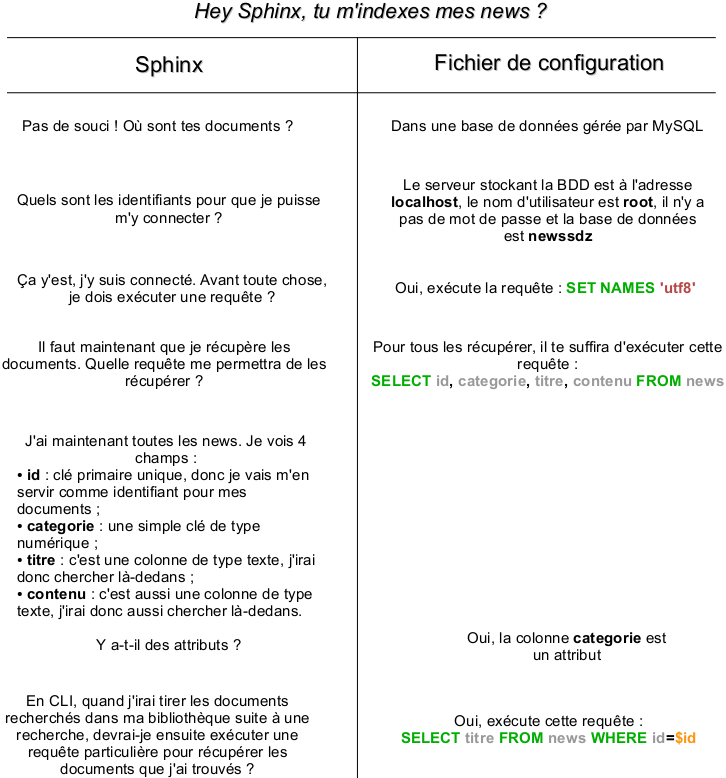

Vous avez envie de faire un moteur de recherche, mais vous ne savez pas comment vous y prendre ? Vous ne voulez pas vous embêter à construire des requêtes SQL au risque de vous embrouiller ? Vous avez déjà fait un moteur de recherche, mais il n'est pas très performant et vous en cherchez alors un puissant ? Ce tutoriel est fait pour vous !
Je vais ici vous présenter un moteur de recherche très utilisé, que ce soit par les très gros sites ou les petits sites faits maison. En effet, Sphinx est l'un des moteurs les plus puissants qui existent, avec une vitesse de recherche impressionnante. Il a l'avantage d'être compatible avec de nombreux langages, comme PHP, Python et Java par exemple. Ici, nous l'exploiterons avec PHP.
Pour vous montrer la puissance de cette bibliothèque, j'ajouterai que de nombreux sites utilisent Sphinx, tels que Dailymotion, joomla.org, mysql.com, et même le SdZ. Le plus gros site utilisant Sphinx hébergeant environ 2 TB de données, cela vous donne une idée de la puissance du moteur. ;)
Commençons par télécharger les fichiers nécessaires au fonctionnement de Sphinx. Pour cela, rendez-vous sur le site de Sphinx, rubrique Téléchargements. Choisissez ensuite la version release. Si vous êtes sous Windows, téléchargez le fichier Win32 binaries w/MySQL support. Sinon, si vous êtes sous Linux ou Mac OS par exemple, téléchargez le fichier Source tarball (tar.gz).
Installation et mise en route sous Windows
Installation
Décompressez l'archive à la racine de votre disque dur, et renommez le dossier en Sphinx. Si votre disque dur se nomme C:, vous devriez avoir un dossier C:\Sphinx.
Ouvrez ensuite l'invite de commandes. Pour cela, cliquez sur le menu Démarrer, puis dans Exécuter tapez cmd et validez. Si votre dossier contenant sphinx est C:\Sphinx, tapez dans la fenêtre ouverte cette commande :
Ceci aura pour effet d'enregistrer le service searchd dans Windows.
Mise en route
Le service est par défaut arrêté, il faut que vous l'activiez manuellement. Pour cela, nous allons d'abord configurer un petit peu Sphinx. Avec Sphinx, toutes les options de configuration se font dans un fichier texte : sphinx.conf, situé dans le dossier C:\Sphinx. Créez donc ce fichier, et mettez-y à l'intérieur :
index dist
{
type = distributed
}
searchd
{
port = 3312
log = C:\Sphinx\var\searchd.log
query_log = C:\Sphinx\var\query.log
pid_file = C:\Sphinx\var\searchd.pid
}
Puis créez un dossier var dans C:\Sphinx, ainsi qu'un dossier data dans le dossier var que vous venez de créer. Maintenant, Sphinx est correctement configuré pour être lancé. Rouvrez la console (Démarrer, puis Exécuter..., puis cmd) et entrez :
net start SphinxSearch
Sphinx est désormais lancé !
Installation et mise en route sous Linux et Mac OS
Installation
Vous devriez avoir l'archive .tar.gz dans le dossier où vous l'avez téléchargée. Dans un premier temps, décompressez l'archive (clic droit > Extraire ici, ou via un terminal avec la commande tar xzvf sphinx-0.9.9.tar.gz par exemple). Pour qu'on ait tous le même dossier (ce qui peut varier à cause du numéro de version), renommez-le sphinx.
Avant de compiler la bibliothèque, nous devons nous assurer que vous avez les outils nécessaires. Il vous faudra deux outils : gcc et make (sous ubuntu). Pour les installer, il faut vous octroyer le paquet build-essential (sudo apt-get install build-essential).
Nous voilà parés. Ouvrez le terminal si ce n'est pas déjà fait, et dirigez-vous dans le dossier via la commande cd. Invoquons maintenant le fichier de configuration avec cette commande :
./configure --prefix=/usr/local/sphinx
L'option --prefix indique au programme l'emplacement désiré où installer Sphinx.
Nous allons maintenant compiler les sources pour créer les fichiers binaires :
make
Tout simplement. ;) Maintenant que tous les fichiers sont prêts, il ne manque plus qu'à les installer :
sudo make install
Et tout est bon ! :)
Mise en route
Avant de démarrer Sphinx, il va falloir le configurer un minimum. Sphinx se configure à l'aide d'un fichier de configuration du nom de sphinx.conf dans le dossier /usr/local/sphinx/etc s'il n'existe pas, créez-le). À l'intérieur de ce fichier, copiez/collez ceci :
Ces données informent le moteur de recherche qu'il devra écouter le port 3312 de l'ordinateur (c'est à ce port qu'on se connectera pour exécuter une requête), qu'il stockera son historique dans les fichiers searchd.log et query.log, et enfin que le fichier associé au processus que Sphinx créera sera searchd.pid.
Pour démarrer Sphinx, il suffit de démarrer le service sphinx. Pour cela, si vous êtes sous Ubuntu, la simple commande sudo service sphinx start suffit.
Pour des raisons pratiques, nous allons créer des liens pointant vers les outils de Sphinx (se situant dans le dossier /usr/local/sphinx/bin si vous avez utilisé le même préfixe que moi). Pour cela, il va falloir, pour chaque fichier, exécuter une commande :
Avant de commencer à rentrer dans le vif du sujet et utiliser bêtement le moteur sans savoir ce qu'on fait, on va d'abord se pencher sur son mode de fonctionnement.
Imaginez votre bureau en désordre, avec vos notes ou vos factures éparpillées n'importe où. Si on vous demandait de retrouver tel montant sur telle facture, vous mettriez un temps fou pour le retrouver ! Pour pallier ce problème, il est recommandé de trier ses papiers pour pouvoir ensuite rechercher à n'importe quel moment et rapidement les informations nécessaires. Et c'est exactement comme ça que Sphinx fonctionne.
Sphinx Search est un moteur de recherche qui permet de rechercher à une grande vitesse du contenu à travers des milliers de documents. Pour ce faire, il a besoin (comme vous et vos papiers) de connaitre ces documents et de les ranger de façon à ce qu'il puisse les retrouver facilement. En effet, si on lui demandait de rechercher à travers une grosse quantité de données sans qu'il ne les ai jamais vues, il devrait tout lire à chaque recherche pour effectuer ensuite des opérations complexes sur les données pour voir si le document correspond à la requête. Tout cela serait bien long, et c'est pour quoi Sphinx opère en deux étapes.
La première étape est l'étape d'indexation. Cette étape est l'étape de lecture. C'est à cette étape que Sphinx va lire toutes les données pour les indexer. Il va alors se constituer une grande bibliothèque avec toutes ces données indexées qu'il pourra donc retrouver plus facilement. Cela soulève donc un léger problème, mais nous y reviendrons en temps voulu.
La seconde étape est simplement l'étape de recherche. Puisque Sphinx a déjà rangé toutes les données, il est capable de les retrouver en un temps record.
Préparation du terrain
Avant de procéder à une recherche, encore faudrait-il avoir des données à rechercher ! Pour que l'on travaille tous sur une même base de travail, je vous propose de télécharger une liste de 57 news issues du SdZ avec leurs catégories.
Indexer les données
Comme je vous l'avais dit plus tôt, il va falloir indexer les données. Cependant, cela ne se fait pas d'un simple coup de baguette magique : il ne suffit pas de dire à Sphinx « indexe-moi mes news ! », ce serait trop simple ! Non, il va falloir lui donner quelques renseignements.
Avec Sphinx, pour effectuer une recherche sur une table, il faut avant tout créer un index. Un index est un bloc d'informations écrit dans le fichier de configuration qui va indiquer à Sphinx sur quoi il devra effectuer la recherche. Un index ne comporte généralement que 2 informations :
Le nom de la source qui lui est associée. Chaque index correspond à une source. C'est dans cette source que vous déterminerez les informations nécessaires au moteur pour pouvoir effectuer la recherche ;
L'emplacement où Sphinx créera sa bibliothèque.
Ainsi, si nous voulons créer notre index news, nous procéderions comme ceci :
On va maintenant créer notre source news. Pour commencer, il va falloir dire à Sphinx qu'il devra se connecter à une BDD gérée par MySQL et lui communiquer les identifiants qui lui permettront de s'y connecter, ainsi que le nom de la base de données.
source news
{
type = mysql
sql_host = localhost
sql_user = root
sql_pass =
sql_db = newssdz
}
# ...
Si nous le voulons, Sphinx peut exécuter une requête dès qu'il se connecte. Ici, nous allons communiquer des données encodées en UTF-8 : il va donc falloir le dire à MySQL grâce à une requête SET NAMES :
source news
{
type = mysql
sql_host = localhost
sql_user = root
sql_pass =
sql_db = newssdz
sql_query_pre = SET NAMES utf8
}
Maintenant, il va falloir indiquer à Sphinx comment récupérer les news pour qu'il les indexe. Pour cela, on va lui écrire la requête qu'il devra exécuter et qui lui retournera toutes les news, avec les champs désirés. Pour cela, une simple requête de type SELECT suffit :
source news
{
type = mysql
sql_host = localhost
sql_user = root
sql_pass =
sql_db = newssdz
sql_query_pre = SET NAMES utf8
sql_query = SELECT id\
, categorie\
, titre\
, contenu FROM news
}
Qu'est-ce que j'entends par « avec les champs désirés » ? Visionnez-vous ce que Sphinx va faire : il va récupérer toutes les news en BDD, avec les valeurs des colonnes id, categorie, titre et contenu. Il va analyser chacune de ces colonnes :
« Tiens, la première colonne id est une clé primaire unique. J'en déduis qu'elle représente de manière unique, grâce à un identifiant, chaque news. Je vais donc me servir de cet identifiant pour différencier chaque document que j'aurai récupéré. »
« Ensuite, il y a une colonne categorie. C'est une simple clé contenant un nombre entier. L'utilisateur veut que je la récupère, donc je m'exécute, mais pour l'instant je vois pas à quoi elle me servira. »
« À présent, je vois une colonne titre. Je vois que cette colonne contiendra des valeurs de type texte. Lorsque l'utilisateur effectuera une recherche, j'irai donc chercher là-dedans. »
« Ah, il y a aussi une colonne contenu qui est de type texte. J'irai donc aussi chercher là-dedans. »
Vous voyez que pour l'instant, il est un peu inutile pour Sphinx de récupérer la colonne categorie, ça ne lui est pas utile. Or, pour nous, utilisateurs, on aimerait bien que Sphinx puisse nous classer nos résultats en fonction des catégories par exemple. On va donc dire à Sphinx que categorie est un attribut (on pourra alors filtrer et trier nos news grâce à cet attribut) :
source news
{
type = mysql
sql_host = localhost
sql_user = root
sql_pass =
sql_db = newssdz
sql_query_pre = SET NAMES utf8
sql_query = SELECT id\
, categorie\
, titre\
, contenu FROM news
sql_attr_uint = categorie
}
Enfin, il reste une dernière chose à indiquer à Sphinx. Lorsqu'on effectuera une recherche, Sphinx ira chercher les résultats dans sa bibliothèque. Après ça, il ira les rechercher dans la BDD pour nous les donner dans la forme qui convient. Il va donc falloir lui dire quelle requête exécuter pour récupérer les news qui nous intéressent. Pour cela, il va donc encore falloir utiliser une requête de type SELECT, avec la liste des champs qu'on veut qu'il nous retourne (sachant que, quoi qu'il arrive, Sphinx retournera l'identifiant du document et les attributs qu'on aura créés) :
source news
{
type = mysql
sql_host = localhost
sql_user = root
sql_pass =
sql_db = newssdz
sql_query_pre = SET NAMES utf8
sql_query = SELECT id\
, categorie\
, titre\
, contenu FROM news
sql_attr_uint = categorie
sql_query_info = SELECT titre FROM news WHERE id=$id
}
Ici, Sphinx nous retournera donc l'identifiant, la catégorie (puisque c'est un attribut) ainsi que le titre de la news.
À présent, tout est prêt pour indexer ! Pour cela, il faut utiliser l'outil indexer. Normalement, Sphinx n'a encore jamais créé de bibliothèque pour votre source news, donc l'outil indexer se contentera de créer les fichiers constituant la bibliothèque.
Cependant, si vous avez déjà indexé une première fois vos news, la bibliothèque sera alors déjà créée. Si le moteur est démarré, il ira verrouiller cette bibliothèque et les fichiers ne seront ainsi pas modifiables, donc la création de la bibliothèque sera impossible. Pour pallier ce problème et faire en sorte que l'outil puisse remplacer ces fichiers tout en laissant le moteur tourner, il faut passer à l'outil indexer l'argument --rotate :
sudo indexer news --rotate
Ce code signifie simplement qu'on veut indexer les news. L'argument news passé à l'outil indexer fait référence à la source que l'on a écrite dans notre fichier de configuration.
Si vous êtes légèrement perdu et que vous n'avez pas tout suivi sur le fonctionnement l'indexation, voici un petit schéma qui vous aidera à comprendre :

Effectuer une recherche
C'est l'étape la plus simple. Pour rechercher avec Sphinx, il faut utiliser l'outil search. À cet outil, vous devez lui passer au moins un paramètre : la requête à chercher. Cependant, nous voulons aussi lui spécifier la source dans laquelle il doit chercher, alors on lui passera l'option -i et le nom de la source. Si vous recherchez « navigateur », cela donnerait ça :
victor@victor-pc:~$ search -i news navigateur
Sphinx 0.9.9-release (r2117)
Copyright (c) 2001-2009, Andrew Aksyonoff
using config file '/usr/local/sphinx/etc/sphinx.conf'...
index 'news': query 'navigateur ': returned 13 matches of 13 total in 0.000 sec
displaying matches:
1. document=1, weight=1, categorie=3
titre=Zoom sur les gestionnaires de fenêtres sur les systèmes UNIX
2. document=13, weight=1, categorie=1
titre=Zoom sur les générateurs de sites statiques
3. document=21, weight=1, categorie=4
titre=WebMotion, un nouveau framework web libre en Java
4. document=24, weight=1, categorie=8
titre=Apple présente ses nouveautés logicielles lors de la WWDC 2011
5. document=25, weight=1, categorie=5
titre=The Million Song Dataset, 300 Go de métadonnées et d'analyses musicales
6. document=32, weight=1, categorie=8
titre=Bilan de la conférence Google I/O 2011
7. document=33, weight=1, categorie=1
titre=Le langage Dart sort sa nouvelle spécification
8. document=35, weight=1, categorie=3
titre=Fedora annonce sa 16e version !
9. document=41, weight=1, categorie=2
titre=Unpacked 2011 : la révélation d'Android Ice Cream Sandwich et du prochain Nexus
10. document=43, weight=1, categorie=4
titre=Ocsigen 2, une bouffée d'air frais pour le web
11. document=45, weight=1, categorie=3
titre=Ubuntu 11.10 est disponible !
12. document=52, weight=1, categorie=3
titre=Bilan de la BUILD Windows : Windows 8 enfin dévoilé
13. document=57, weight=1, categorie=3
titre=Firefox 6.0 sort des cartons
words:
1. 'navigateur': 13 documents, 32 hits
Décortiquons ce résultat en commençant par la première ligne : index 'news': query 'navigateur ': returned 13 matches of 13 total in 0.000 sec. Cette ligne nous indique :
L'index sur lequel on a cherché (ici, news) ;
La requête qu'on a entrée (ici, navigateur) ;
Le nombre de résultats retourné et le nombre de résultats total. Le premier nombre peut être inférieur au second si le nombre de résultats trouvé est plus grand que la limite imposée à Sphinx (par défaut à 20). Essayez de chercher « web », et vous verrez qu'il ne vous retournera que 20 news sur un total de 28 (nous verrons plus tard comment utiliser cette fonctionnalité, notamment pour créer un système de pagination) ;
Et enfin, le temps qu'il lui a fallu pour effectuer la recherche... Oui, le temps est (très) petit ! Chez moi, il lui a fallu moins d'un millième de seconde pour trouver les news qui m'intéressent.
Après ça, Sphinx vous dévoile tous les résultats de la recherche. Prenons le premier :
1. document=1, weight=1, categorie=3
titre=Zoom sur les gestionnaires de fenêtres sur les systèmes UNIX
Vous voyez une première ligne contenant 3 valeurs, et une seconde ligne contenant une valeur. Voici dans l'ordre la signification de chacune d'elles :
document=1 : c'est la valeur de la clé primaire de la news (dans notre cas, elle correspond à la valeur du champ id). Sphinx s'en sert comme identifiant pour justement identifier ses résultats. L'identifiant de cette news en BDD est donc 1 ;
weight=1 : en théorie, plus cette valeur est élevée, plus le résultat correspond à la recherche. Ici, toutes les valeurs sont à 1, car nous utilisons un mode de recherche qui ne permet pas l'établissement d'un classement. Si vous voulez l'activer, il faut rajouter l'option -e2 (search -i news navigateur -e2) ;
categorie=3 : souvenez-vous, on a dit à Sphinx que categorie était un attribut. Il nous l'a donc retourné et on sait désormais que cette news appartient à la catégorie ayant pour identifiant 3 en BDD ;
titre=[...] : c'est tout simplement la valeur du champ titre.
Et enfin, après la liste de tous les résultats trouvés, nous avons :
words:
1. 'navigateur': 13 documents, 32 hits
Ce bout de texte nous liste les mots que l'on a cherchés (ici, il n'y avait que « navigateur »). Pour chacun de ces mots, Sphinx nous dit dans combien de documents il a été trouvé (ici, il a été trouvé dans 13 news) et combien de fois il a été trouvé (ici, 32 fois).
Le problème de l'indexation
Comme je l'avais brièvement évoqué, un léger problème s'est posé : Sphinx s'est constitué une bibliothèque avec les données actuelles présentes en BDD. Essayez d'ajouter une news, puis relancez la recherche : vous verrez que la news n'a pas été prise en compte par Sphinx, et c'est normal puisque cette news n'a pas été ajoutée à sa bibliothèque.
Pour pallier ce problème, il faut indexer régulièrement sa BDD. Sous Linux et Mac, vous pouvez utiliser des cron jobs pour exécuter cette tâche. Je ne vais pas m'étaler sur le fonctionnement des cron jobs ni sur leur utilisation (M@teo21 le fait très bien), donc je vais vous donner la ligne à ajouter à votre crontab pour indexer automatiquement les données toutes les 15 minutes :
Je vous avais dit qu'un attribut permettait de filtrer. En effet, si l'envie vous prend de ne sélectionner que les news appartenant à la catégorie 3, vous pouvez le faire grâce à l'option --filter (ou -f). Cette option attend deux arguments : le nom de l'attribut et la valeur qu'il doit avoir. Dans notre cas, cela nous donnerait :
victor@victor-pc:~$ search -i news navigateur -f categorie 3
Sphinx 0.9.9-release (r2117)
Copyright (c) 2001-2009, Andrew Aksyonoff
using config file '/usr/local/sphinx/etc/sphinx.conf'...
index 'news': query 'navigateur ': returned 5 matches of 5 total in 0.000 sec
displaying matches:
1. document=1, weight=1, categorie=3
titre=Zoom sur les gestionnaires de fenêtres sur les systèmes UNIX
2. document=35, weight=1, categorie=3
titre=Fedora annonce sa 16e version !
3. document=45, weight=1, categorie=3
titre=Ubuntu 11.10 est disponible !
4. document=52, weight=1, categorie=3
titre=Bilan de la BUILD Windows : Windows 8 enfin dévoilé
5. document=57, weight=1, categorie=3
titre=Firefox 6.0 sort des cartons
words:
1. 'navigateur': 13 documents, 32 hits
Sphinx offre beaucoup de possibilités, et je ne peux malheureusement pas toutes les lister ici. Par cet exemple, je voulais juste vous montrer à quoi servait (entre autres) de spécifier des attributs dans le fichier de configuration. Maintenant, je sais que la console vous ennuie un petit peu et que vous voulez exploiter ce moteur pour votre site... Alors exploitons-le donc grâce à PHP !
Voilà le moment tant attendu : nous allons enfin intégrer le moteur de recherche sur votre site. Pour cela, nous allons nous servir de PHP, mais si votre site web est construit avec Python ou Java par exemple, sachez que vous pourrez aussi exploiter Sphinx avec ces langages.
Mise en place de l'API Sphinx pour PHP
Lorsque nous avions téléchargé Sphinx pour installer le moteur sur notre serveur, il y avait dedans un sous-dossier ~/api. Si vous l'ouvrez, vous découvrirez des fichiers PHP et Python, ainsi que des dossiers pour Ruby et Java.
Pour plus de confort, je vous recommande de créer un dossier à la racine de votre serveur web où vous placerez les fichiers nécessaires pour mettre en place le moteur (par exemple, un dossier ~/sphinx). Dans ce dossier, vous allez copier le dossier api présent dans l'archive téléchargée au début de ce tutoriel. Vous devriez donc avoir un dossier ~/sphinx contenant le dossier api.
Dans votre dossier sphinx, vous allez créer un fichier index.php (c'est sur cette page que nous allons nous servir de Sphinx). La première chose à faire pour se servir du moteur est d'inclure le fichier sphinxapi.php, présent dans le dossier api :
<?php
require 'api/sphinxapi.php';
Nous sommes maintenant fin prêts à utiliser le moteur !
Première recherche avec PHP
Effectuer une recherche avec PHP est aussi simple qu'avec la console. Pour commencer, nous devrons créer un objet SphinxClient. Ce sera sur cet objet que nous appellerons diverses méthodes nous permettant d'effectuer des recherches ou d'ajouter des filtres par exemple.
Une fois l'objet créé, il faudra lui dire de se connecter au serveur où Sphinx tourne, et à quel port il doit se connecter. Cela se fait grâce à la méthode SetServer($server, $port).
Ensuite, il est préférable d'appeler une méthode qui va limiter le temps de connexion à 1 seconde. En effet, si la connexion dure plus d'une seconde, vous pourriez être quasiment sûr qu'il y a un problème, donc autant arrêter la recherche. Cela se fait grâce à la méthode SetConnectionTimeout($seconds).
Et enfin, il ne reste plus qu'à chercher ! Une recherche s'effectue grâce à la méthode Query($query, $index), où $query est la requête (par exemple, « navigateur ») et $index est tout simplement l'index sur lequel on veut que Sphinx cherche (dans notre cas il s'agit de « news »). Cette méthode renvoie un tableau contenant les résultats ainsi que les statistiques relatives à la requête (le temps mis pour trouver les résultats, le nombre de résultats trouvé, etc.). Pour comprendre la forme du tableau que Sphinx nous renvoie, nous allons l'afficher.
Il peut faire peur, mais regardez-le bien, vous devriez normalement comprendre la plupart des éléments, car rien de nouveau n'est apparu depuis la console.
Décomposons ce tableau en deux parties : l'une contient des informations relatives à la requête, l'autre partie contient les résultats trouvés.
La clé error : contient un message d'erreur si une erreur survient ;
La clé warning : contient un message si une alerte a été levée ;
La clé status : est à 0 si tout s'est bien passé (les valeurs possibles vont de 0 à 3, les valeurs allant de 1 à 3 signifiant qu'il y a eu une erreur ou une alerte) ;
La clé fields : contient un tableau contenant lui-même la liste des colonnes dans lesquelles Sphinx a été cherché ;
La clé attrs : contient la liste des attributs ;
Les clés total et total_found : contiennent respectivement le nombre de résultats retourné et le nombre de résultats total ;
La clé time : contient le temps en seconde mis par Sphinx pour effectuer la recherche ;
La clé words : contient une liste de valeurs ayant pour clé l'un des mots recherchés et pour valeur un autre tableau contenant le nombre de documents dans lequel il a été trouvé et le nombre de fois qu'il a été trouvé.
C'était une brève description car je pense que vous étiez capables de trouver vous-mêmes la signification de chacune des entrées.
Vient maintenant la seconde partie : la liste des résultats. Cette liste est stockée dans un tableau à la clé matches. Ce tableau, qui contient tous les résultats, est lui-même composé de tableaux, chacun représentant un résultat. Chaque tableau est une valeur dont la clé est l'identifiant du document. Par exemple, si je prends le premier résultat :
Nous voyons ici que le premier résultat se trouve à la clé 1. Cela veut donc dire que ce résultat n'est autre que la news ayant pour identifiant 1 en BDD.
Ensuite, nous retrouvons la clé weight qui, je vous le rappelle, contient un nombre représentant le poids du document (théoriquement, plus le poids est élevé, plus le document correspond à la recherche). Ici, le poids est de 1 pour la même raison qu'en console : le mode de recherche utilisé ne permet pas de calculer le poids des documents. Si vous voulez obtenir ce poids, je vous invite à regarder du côté de la méthode SetMatchMode($mode), et plus particulièrement l'argument SPH_MATCH_EXTENDED2 (qui correspond à l'option -e2 que nous pouvons passer à l'outil search dans la console).
Enfin, Sphinx nous liste les attributs correspondant à la news. Ici, il n'y a que catégorie, et Sphinx nous informe que cette news appartient à la catégorie ayant pour identifiant 3 en BDD.
Pourquoi Sphinx ne m'a pas renvoyé le titre de la news comme dans la console ?
Comme je vous l'avais dit, la requête correspondant à la clé de configuration sql_query_info n'est utilisée que lorsqu'on effectue une recherche depuis la console. Sphinx ignore donc cette requête car nous recherchons depuis PHP. Nous allons donc devoir effectuer nous-mêmes la requête nous permettant de récupérer la liste des news avec leur titre et, pendant qu'on y est, le nom de leur catégorie à l'aide d'une simple jointure.
La première difficulté que vous serez peut-être amenés à rencontrer est « comment récupérer les identifiants de mes news ? ». En fait, c'est très simple. On sait que les identifiants sont les clés du tableau $resultat['matches'] (où $resultat est le gros tableau renvoyé par Query()). À partir de là, nous allons nous servir d'une fonction toute bête : array_keys(). Cette fonction attend un paramètre : le tableau dont on veut récupérer les clés, et ce tableau n'est autre que $resultat['matches'] !
Nous avons donc notre liste d'identifiants. Jusqu'à maintenant, vous étiez peut-être habitués à écrire, dans votre requête, une clause WHERE où vous mettiez une valeur précise pour un champ. Sachez qu'il est possible, grâce à la fonction IN(), de spécifier plusieurs valeurs. Ainsi, vous n'êtes pas contraints à une seule valeur : vous pouvez en mettre une infinité, où chaque valeur est séparée d'une autre par une virgule. Ainsi, le code pourrait ressembler à ceci :
<?php
require 'api/sphinxapi.php';
// Le quatrième paramètre sert à dire à MySQL que l'on va communiquer des données encodées en UTF-8
$db = new PDO('mysql:host=localhost;dbname=newssdz', 'root', '', array(PDO::MYSQL_ATTR_INIT_COMMAND => 'SET NAMES \'UTF8\''));
$db->setAttribute(PDO::ATTR_ERRMODE, PDO::ERRMODE_EXCEPTION);
$sphinx = new SphinxClient;
$sphinx->SetServer('localhost', 3312);
$sphinx->SetConnectTimeout(1);
$resultat = $sphinx->Query('navigateur', 'news');
$ids = array_keys($resultat['matches']);
$query = $db->query('SELECT news.titre, categories.nom AS cat_nom FROM news LEFT JOIN categories ON news.categorie = categories.id WHERE news.id IN('.implode(',', $ids).')');
Il ne vous reste maintenant plus qu'à afficher les résultats sous la forme de votre choix !
<?php
require 'api/sphinxapi.php';
// Le quatrième paramètre sert à dire à MySQL que l'on va communiquer des données encodées en UTF-8
$db = new PDO('mysql:host=localhost;dbname=newssdz', 'root', '', array(PDO::MYSQL_ATTR_INIT_COMMAND => 'SET NAMES \'UTF8\''));
$db->setAttribute(PDO::ATTR_ERRMODE, PDO::ERRMODE_EXCEPTION);
$sphinx = new SphinxClient;
$sphinx->SetServer('localhost', 3312);
$sphinx->SetConnectTimeout(1);
$resultat = $sphinx->Query('navigateur', 'news');
$ids = array_keys($resultat['matches']);
$query = $db->query('SELECT news.titre, categories.nom AS cat_nom FROM news LEFT JOIN categories ON news.categorie = categories.id WHERE news.id IN('.implode(',', $ids).')');
?>
<!DOCTYPE html PUBLIC "-//W3C//DTD XHTML 1.0 Strict//EN" "http://www.w3.org/TR/xhtml1/DTD/xhtml1-strict.dtd">
<html xmlns="http://www.w3.org/1999/xhtml" xml:lang="fr">
<head>
<meta http-equiv="Content-type" content="text/html; charset=UTF-8" />
<title>Premier essai de l'API PHP de Sphinx</title>
</head>
<body>
<p><?php echo $res['total_found']; ?> résultats ont été trouvés en <?php echo $res['time']; ?>s.</p>
<table style="width:100%; text-align:center; margin: auto;">
<tr><th>Titre</th><th>Catégorie</th></tr>
<?php
while ($news = $query->fetch(PDO::FETCH_ASSOC))
{
echo '<tr><td>', $news['titre'], '</td><td>', $news['cat_nom'], '</td></tr>', "\n";
}
?>
</table>
</body>
</html>
Paginer ses résultats
En recherchant « navigateur », nous n'avons que 13 résultats. Je vais maintenant vous inviter à chercher « web », où vous découvrirez que 28 news correspondent à la recherche, alors que Sphinx n'en a retourné que 20.
Comme je l'avais dit dans la précédente partie, Sphinx retourne par défaut les 20 premiers résultats. Il est possible de changer cette limite ainsi que le rang de la première news à renvoyer de façon à créer un système de pagination grâce à la méthode SetLimits($rank, $limit).
Imaginons que nous voulons 10 résultats par page. La première page comportera les news du rang 0 au rang 9, la deuxième page comportera les news du rang 10 au rang 19, la troisième page comportera les news du rang 20 au rang 29, etc. À partir de là, il est facile de créer un système de pagination : le rang de la première news est égal à ($page - 1) * LIMITE, où $page est le numéro de la page et où LIMITE est une constante contenant le nombre de résultats par page.
Il ne reste qu'un détail à régler : comment connait-on le nombre de pages ? Pour cela, il faudrait déjà avoir le nombre de résultats total trouvé. Bonne nouvelle, on le connait ce nombre : ce n'est autre que $resultat['total_found'] ! Pour calculer le nombre de pages, il va falloir diviser le nombre de résultats total par le nombre de résultats par page, puis arrondir le nombre obtenu à l'entier supérieur grâce à ceil.
Le code que vous avez obtenu devrait ressembler à ça :
<?php
require 'api/sphinxapi.php';
define('LIMITE', 10);
// Le quatrième paramètre sert à dire à MySQL que l'on va communiquer des données encodées en UTF-8
$db = new PDO('mysql:host=localhost;dbname=newssdz', 'root', '', array(PDO::MYSQL_ATTR_INIT_COMMAND => 'SET NAMES \'UTF8\''));
$db->setAttribute(PDO::ATTR_ERRMODE, PDO::ERRMODE_EXCEPTION);
$sphinx = new SphinxClient;
$sphinx->SetServer('localhost', 3312);
$sphinx->SetConnectTimeout(1);
$page = isset($_GET['page']) ? (int) $_GET['page'] : 1;
$rang = ($page - 1) * LIMITE;
$sphinx->SetLimits($rang, LIMITE);
$resultat = $sphinx->Query('web', 'news');
$nombrePages = ceil($resultat['total_found'] / LIMITE);
$ids = array_keys($resultat['matches']);
$query = $db->query('SELECT news.titre, categories.nom AS cat_nom FROM news LEFT JOIN categories ON news.categorie = categories.id WHERE news.id IN('.implode(',', $ids).')');
?>
<!DOCTYPE html PUBLIC "-//W3C//DTD XHTML 1.0 Strict//EN" "http://www.w3.org/TR/xhtml1/DTD/xhtml1-strict.dtd">
<html xmlns="http://www.w3.org/1999/xhtml" xml:lang="fr">
<head>
<meta http-equiv="Content-type" content="text/html; charset=UTF-8" />
<title>Premier essai de l'API PHP de Sphinx</title>
</head>
<body>
<p><?php echo $resultat['total_found']; ?> résultats ont été trouvés en <?php echo $resultat['time']; ?>s.</p>
<p>Pages :
<?php
// On affiche les liens menant aux différentes pages
for ($i = 1; $i <= $nombrePages; $i++)
{
echo '<a href="?page=', $i, '">', $i, '</a> ';
}
?>
</p>
<table style="width:100%; text-align:center; margin: auto;">
<tr><th>Titre</th><th>Catégorie</th></tr>
<?php
while ($news = $query->fetch(PDO::FETCH_ASSOC))
{
echo '<tr><td>', $news['titre'], '</td><td>', $news['cat_nom'], '</td></tr>', "\n";
}
?>
</table>
</body>
</html>
De la sorte, vos résultats sont paginés avec 10 résultats par page !
Utiliser des filtres
Nous avons vu dans la console que nous pouvions ne demander à Sphinx que les news appartenant à la catégorie no3. Avec PHP, cette contrainte s'ajoute à la requête avec la méthode SetFilter($attr, $values). Le premier paramètre est l'attribut concerné et le second paramètre doit être un tableau contenant la liste des valeurs que l'attribut peut prendre. Par exemple, si nous ne voulons que les news des catégories Web et Programmation (ayant respectivement pour identifiants 1 et 4), cela donnerait :
<?php
require 'api/sphinxapi.php';
define('LIMITE', 10);
// Le quatrième paramètre sert à dire à MySQL que l'on va communiquer des données encodées en UTF-8
$db = new PDO('mysql:host=localhost;dbname=newssdz', 'root', '', array(PDO::MYSQL_ATTR_INIT_COMMAND => 'SET NAMES \'UTF8\''));
$db->setAttribute(PDO::ATTR_ERRMODE, PDO::ERRMODE_EXCEPTION);
$sphinx = new SphinxClient;
$sphinx->SetServer('localhost', 3312);
$sphinx->SetConnectTimeout(1);
// On ne veut que des news de certaines catégories
$sphinx->SetFilter('categorie', array(1, 4));
$page = isset($_GET['page']) ? (int) $_GET['page'] : 1;
$rang = ($page - 1) * LIMITE;
$sphinx->SetLimits($rang, LIMITE);
$resultat = $sphinx->Query('web', 'news');
$nombrePages = ceil($resultat['total_found'] / LIMITE);
$ids = array_keys($resultat['matches']);
$query = $db->query('SELECT news.titre, categories.nom AS cat_nom FROM news LEFT JOIN categories ON news.categorie = categories.id WHERE news.id IN('.implode(',', $ids).')');
?>
<!DOCTYPE html PUBLIC "-//W3C//DTD XHTML 1.0 Strict//EN" "http://www.w3.org/TR/xhtml1/DTD/xhtml1-strict.dtd">
<html xmlns="http://www.w3.org/1999/xhtml" xml:lang="fr">
<head>
<meta http-equiv="Content-type" content="text/html; charset=UTF-8" />
<title>Premier essai de l'API PHP de Sphinx</title>
</head>
<body>
<p><?php echo $resultat['total_found']; ?> résultats ont été trouvés en <?php echo $resultat['time']; ?>s.</p>
<p>Pages :
<?php
// On affiche les liens menant aux différentes pages
for ($i = 1; $i <= $nombrePages; $i++)
{
echo '<a href="?page=', $i, '">', $i, '</a> ';
}
?>
</p>
<table style="width:100%; text-align:center; margin: auto;">
<tr><th>Titre</th><th>Catégorie</th></tr>
<?php
while ($news = $query->fetch(PDO::FETCH_ASSOC))
{
echo '<tr><td>', $news['titre'], '</td><td>', $news['cat_nom'], '</td></tr>', "\n";
}
?>
</table>
</body>
</html>
Si vous testez ce code, vous verrez que Sphinx vous retournera 15 résultats avec des news n'appartenant qu'aux catégories Web et Programmation. Pratique, non ?
Le problème des caractères accentués
Si vous essayez de chercher « étude », Sphinx vous retournera deux news. Cependant, si vous cherchez « etude », Sphinx ne vous retournera rien. En effet, pour lui, « étude » et « etude » sont deux mots différents, donc il est normal que le résultat de la requête ne soit pas le même. Le problème, c'est que nous, ça ne nous arrange pas trop. On aimerait bien qu'il nous retourne les mêmes news, qu'on recherche « étude » ou « etude ». Pour pallier ce problème, il va falloir dire à Sphinx que le caractère « é » équivaut à « e », que « à » équivaut à « a », etc. Cela se fait dans le fichier de configuration (oui, on y retourne !). Il va falloir, dans la source sourcenews, écrire cette table de correspondances. Elle est assez longue et impossible à retenir par cœur, donc exceptionnellement je vous autorise à copier/coller (que ceux qui se sentent de l'apprendre ne se gênent pas, mais bon...) :
Maintenant, si vous essayez de chercher « etude », eh bien... ça ne fonctionnera toujours pas. En effet, dans la bibliothèque de Sphinx, les mots sont toujours accentués, donc il ne trouvera toujours pas le mot « etude ». Il va falloir réindexer les news pour que Sphinx crée sa bibliothèque avec les news « désaccentuées ». Ainsi, dans la bibliothèque de Sphinx, il n'y aura plus de mot « étude », mais que des « etude ».
Essayez à présent de chercher « etude », et vous verrez que Sphinx vous retournera les news attendues. Il en va de même si vous cherchez « étude » ou même « ètude », car Sphinx retire tous les accents de la requête.
Ce tutoriel s'arrête ici. Celui-ci vous a posé les bases et permis de réaliser votre premier moteur de recherche avec Sphinx. Libre à vous de l'améliorer et de chercher sur Internet de nouvelles fonctionnalités intéressantes ! Pour cela, je vous redirigerais vers la documentation officielle de Sphinx (indépendante du langage utilisé) et la documentation de Sphinx pour PHP. :)